← 返回阅读库 · 原论文目录
论文讲解阅读文档 · 新模型 · v062
MLP-Mixer An all-MLP Architecture for Vision[2105.01601]
视频时长 00:09:24；讲解文字 4,423 字符；提取讲解画面 28 张。按视频原顺序阅读，每段文字保留时间戳。
文字来自整段视频的自动语音转写，按自然停顿分段，并与 PPT / 论文页面 / 演示画面对齐。未将讲解压缩为摘要；术语、数字和口述公式请结合画面及原论文核对。 阅读稿已校正规范部分明确术语误识别；原始逐字稿和每处修改记录另行保留。
讲解画面为源视频截图（640×360），不是可编辑 PPT 文件。全片按每秒 2 帧扫描内容变化，逐步展开页保留；连续动画保留代表画面。清晰度受源视频限制。
下载完整资料包 · 含离线 HTML、PDF、Word、全部 PPT 画面和字幕。
原论文与材料
MLP-Mixer: An all-MLP Architecture for Vision · 下载完整 PDF（16 页）
按时间阅读
00:00:00–00:00:14 · 画面 001
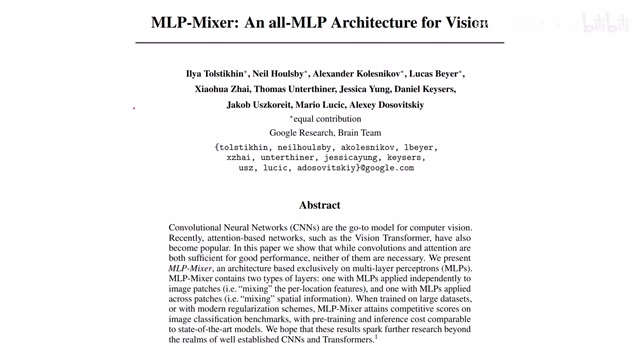
00:00:00–00:00:14 · 画面 001大家好,今天我们来介绍 MLP MixerAn All-MLP Architecture for Vision 这篇论文刚出来的时候是很火爆的，现在等热度下一下，我们来看看它究竟讲了一个什么事情。其实本文的核心工作就是这么一张图，如果你熟悉 Vision Transformer 的话，相信对这个结构已经是无陌生了。整文的工作相当于就是把原来的 Vision Transformer 里面的 Transformer Layer 全部换成这个 Mixer Layer。
00:00:14–00:02:14 · 画面 002
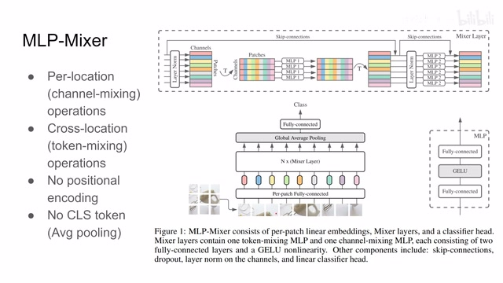
00:00:14–00:02:14 · 画面 002那么它的前期的操作呢，也是跟 transformer 一样的，把图像呢分成一个 patch，每个 patch 之间呢是相互不重叠的，然后呢投影到一个 latent space 里面或者叫 embedding 里面，然后呢把这一个 patch 送到 mixer layer 里面。那么下面呢，我们就主要来看一下这个 mixer layer 里面有什么。那么可以看到呢，上面这里我们的一个 patch 的 token 进来之后呢，首先做了 layer normalization，然后呢，每一个 patch 呢因为是一个 vector 嘛，所以它就这样横着展开。
把所有的 patch 堆到一块呢，就是这个样子。这里呢，它像 CNN 一样把这个 vector 的长度呢理解为这个 channels。那么首先第一步呢，是对这样一个矩阵做转制，然后呢，把它的每行送到我们的一个 MLP 里面。那这个时候呢，你可以看到这个 MLP 的输入呢是每一个 patch 相同位置上的元素，这样一条条的切开然后送进去，而且呢，所有的 MLP 呢都是使用的同样的参数。这样子呢，经过变化呢，得到这样一个矩阵。
然后呢，再给它翻转回来，又变成了好像是 channels 列式这个 patches 这么一个形状。从这里呢，加上一个 skip connection。那么前面这一块呢，就是一个 cross location，也就是这里的 token mixing 这样一个操作。那么它解决的呢，就是不同的 token 它们之间相互的交流。那么随后呢，我们要在 token 内部呢进行交流。那然后呢，相同的道理，我们这样呢直接把 token 内部的这个 vector 呢，经过这个 layer normalization 之后送到另一个 mlp 里面。
这里也是每个 token 经过的 MLP 都是相同的参数。那么经过这样的变化，然后再加上 skip connection，就做完了一个 channel mixing，就是一个 patch 一个 token 里面它的各个 channel 之间相互的做了一个变化。这样的一层就是 mixer layer。你把这样一个 mixer layer 重复很多次，就这样不断的交替，就不断的做 token mixing 和 channel mixing，这样就最终能够把所有的信息都相互关联传递开了。
00:02:14–00:02:52 · 画面 003
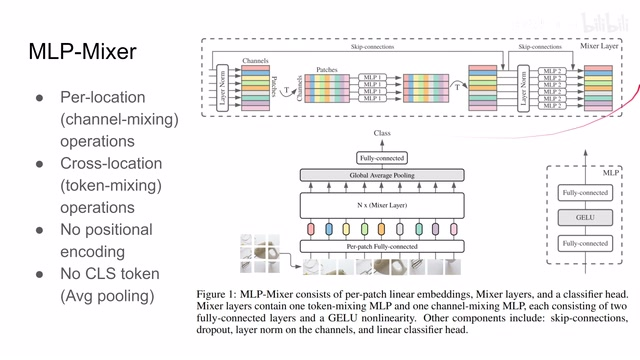
00:02:14–00:02:52 · 画面 003此外我们需要注意的几点细节，首先第一个是相对于 vision transformer，我们发现这里已经没有 classification token 了，取消这个 token 之后，我们后面用哪个 feature 来做我们的分类问题，这里直接做了一个 global average pooling，直接用一个 pooling 求一下各个 feature 的平均值，就得到我们最终用来做分类的 feature。这个是第一点。那么第二点是这里没有了 positional embedding 或者叫 positional encoding。
00:02:52–00:03:46 · 画面 004
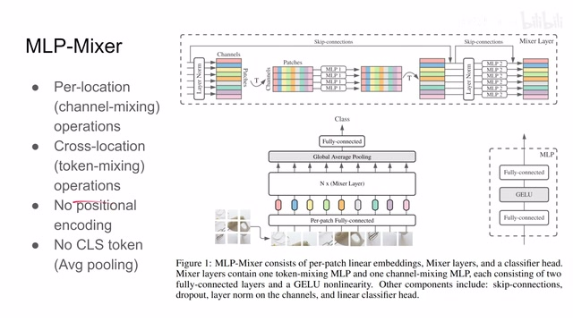
00:02:52–00:03:46 · 画面 004因为 Mixer layer 里面它没有 self-attention，而对 MLP 来说，它每一个 node 输入的值对应的整个感受野都是固定的，所以这里的 Positional embedding 也被取消掉了。那么第三个小的细节就是这里在 MLP 的两个 Fully connected layer 之间，作者用了 GELU 激活函数，它具体的表达我们后面会简单设计一下。
所以总的来看这个 mixer 就是把我们的原来一个复杂的 convolution 的一个行动把它变成了一个是 perlocation 就是 channelwise 的这么一个 mixing 和这个 crosslocation 就是 pixelwise 的这么一个 location 或者叫 tokenmixing 那么它的这两个操作然后每一个操作都是用 MLP 实现的这个就是本文的核心的设计那么一谈到这个我们相信很多朋友就马上回想起来我们之前介绍的 EfficientNet
00:03:46–00:03:58 · 画面 005
00:03:46–00:03:58 · 画面 005EfficientNet 里面我们也是把一个大的 Convolution Kernel 给它拆成了 Paralyzed 和 ChannelWise 两个 Kernel 就像图里显示的这样但是这两个工作它们的合金的思想上的区别就是对于 SeparableConvolution 比如说这个操作虽然它是 DepthWised 但是它会输出很多个 Channel 每一个 Channel 其实就对应一个不同的 Filter 也就是说我做不同 Channel 的时候使用的 Filter 是不一样的
00:03:58–00:04:10 · 画面 006
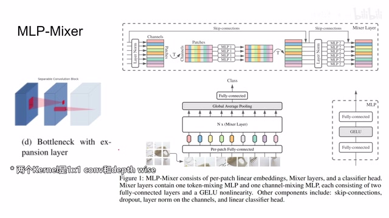
00:03:58–00:04:10 · 画面 00600:04:10–00:04:29 · 画面 007
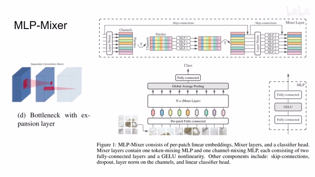
00:04:10–00:04:29 · 画面 007而对于 Mixer 来说它始终只使用了一个 MLP 像这里也是只有一个 MLP 它们做的时候参数是共享的那么随后我们再看一点小的细节一个是 Layer Normalization 它的意思就是我能每一个 Sample 它们之间的各个 Feature 做一个 Normalization 关于不同的 Normalization 这个地址有很详细的 Visualization 做得非常直观有条件可以随时去复习一下那么另外就是我们之前提到的 GELU
00:04:29–00:04:39 · 画面 008
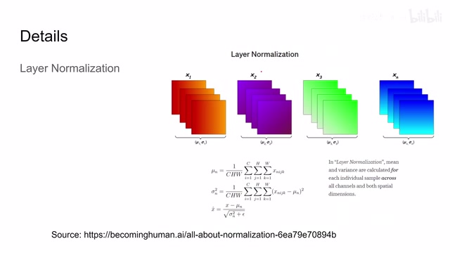
00:04:29–00:04:39 · 画面 00800:04:39–00:04:40 · 画面 009
00:04:39–00:04:40 · 画面 00900:04:40–00:04:45 · 画面 010
00:04:40–00:04:45 · 画面 01000:04:45–00:05:08 · 画面 011
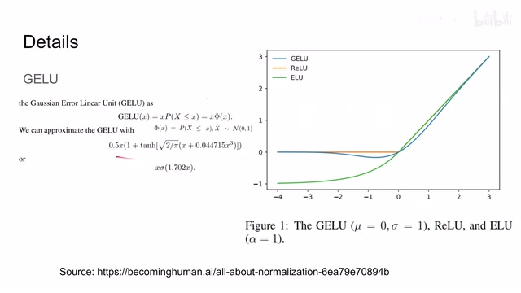
00:04:45–00:05:08 · 画面 011Gaussian Error Linear Unit 它的定义是 x 乘上这样一个事件的概率那么这个事件是 x 大于一个特定的 X 它的概率而这个 X 满足一个正态分布那么最后它画出来的几个激活函数的样式就是一场这个样子的然后当然我们也有各种的近似来能够快速的计算它那么以上就是 MLP-Mixer 的主要的技术细节了那么我们再来看作者汇报的结果吧
00:05:08–00:05:11 · 画面 012
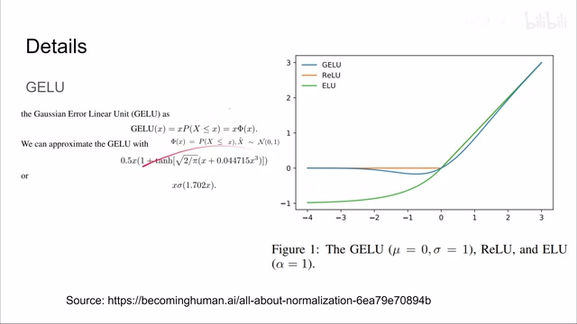
00:05:08–00:05:11 · 画面 01200:05:11–00:05:16 · 画面 013
00:05:11–00:05:16 · 画面 01300:05:16–00:05:44 · 画面 014
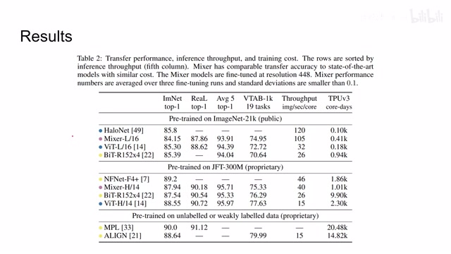
00:05:16–00:05:44 · 画面 014首先是 Transfer Learning 这里我们看到 MLP-Mixer 可以获得跟 Vision Transformer 相近似的这样一个性能但是处理的速度是 Vision Transformer 的很多倍这个就是本文的核心的贡献我们的准确率在相近的情况下某种程度上算是相近它的处理的速度得了大幅度的提高后面也是相似的结果那么再看到这里我们通过不同程度的 Pretrain
00:05:44–00:05:56 · 画面 015
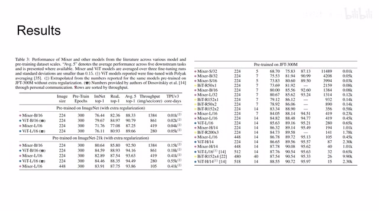
00:05:44–00:05:56 · 画面 015得到的结果也是非常的相近特别是在这个规模下的模型呢相对于这个 Vision Transformer 的优势呢特别明显那么此外呢这里作者还做了一些关于模型的 scaling 就是我增加模型的深度然后增加模型的宽度等等这样的实验这个呢是两条符合直觉的曲线可以看到呢相同准确率的情况下呢本文的方法呢相对于 Vision Transformer 的这个速度的优势
00:05:56–00:06:15 · 画面 016
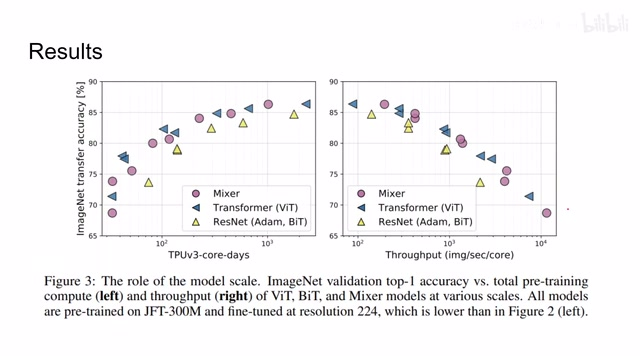
00:05:56–00:06:15 · 画面 016那么最后呢我们再来看看作者提供的伪代码对于代码这块呢我一直都是想说这个无可奉告对吧毕竟这是一个需要自己看的东西机器都能看懂呢那人也一定能看懂但是呢看到很多朋友这么热情那如果我什么都不说呢你们又不高兴对吧那这里我们就简单讲一下吧那么简单来看这个代码的最底层呢是 MLP block 它呢就是两层的 linear layer 中间加了一个 GELU
00:06:15–00:06:58 · 画面 017
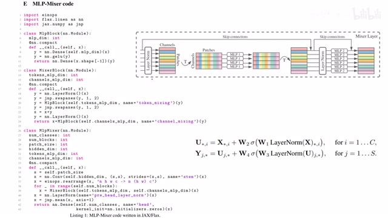
00:06:15–00:06:58 · 画面 017那这个 block 呢就是这里的 mlp 和这里的 mlp 他们的本质然后呢 mlp block 呢再组合成这个 mixer block 这里我们看到输入的特征呢首先过了 layer normalization 然后呢我们做了一个转制因为我们的第一个轴是这个 batch 嘛第二个轴和第三个轴就是我们的 channel 和 patch 嘛所以这里你可以看到它的转制的函数是 y1 2 嘛交换这两个轴嘛然后呢过这个 mlp block
00:06:58–00:06:59 · 画面 018
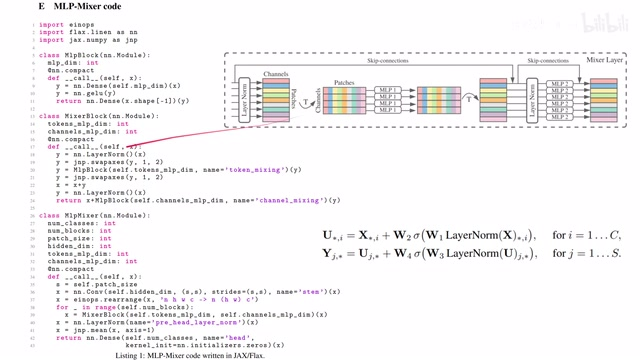
00:06:58–00:06:59 · 画面 01800:06:59–00:07:14 · 画面 019
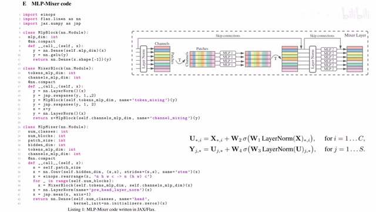
00:06:59–00:07:14 · 画面 019就是我们两次的 fully connected layer 那就是这里的位置那么做完之后呢再给它转回来转到呢就是这里那么随后呢加上我们的 skip connection 那就是这里那么上面这一块呢就是这个 token wise 的 connection 那么下面呢这个 layer normalization 一样的过 mlp 然后呢加上我们的 skip connection 就是这个 channel wise 的这个 mlp 那么最终我们组网络的时候
00:07:14–00:07:15 · 画面 020
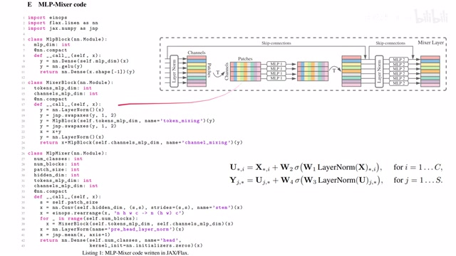
00:07:14–00:07:15 · 画面 02000:07:15–00:07:30 · 画面 021
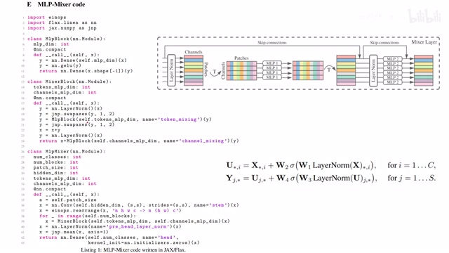
00:07:15–00:07:30 · 画面 02100:07:30–00:07:31 · 画面 022
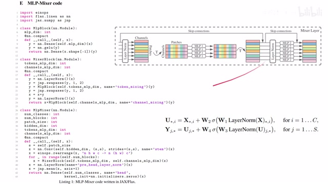
00:07:30–00:07:31 · 画面 02200:07:31–00:07:37 · 画面 023
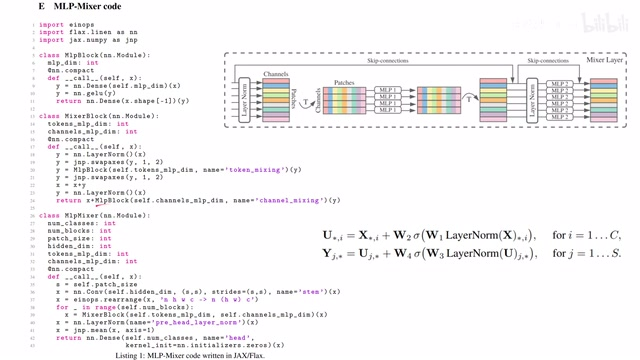
00:07:31–00:07:37 · 画面 02300:07:37–00:07:47 · 画面 024
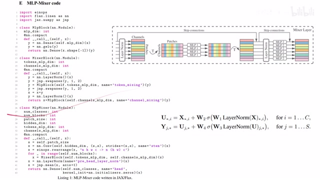
00:07:37–00:07:47 · 画面 024我们 MLP-Mixer 首先它是通过一个 convolution 的操作注意它这里的 stride 和我们的 kernel size 是一样都是我们 patch size 那么这个操作表面上是在做 convolution 实际上就是第一把我们的图像画成了一个个的 patch 那么第二就是给它做了一个线性的变换然后我们再把它的长和宽这一个二维的 representation 给它变形
00:07:47–00:08:18 · 画面 025
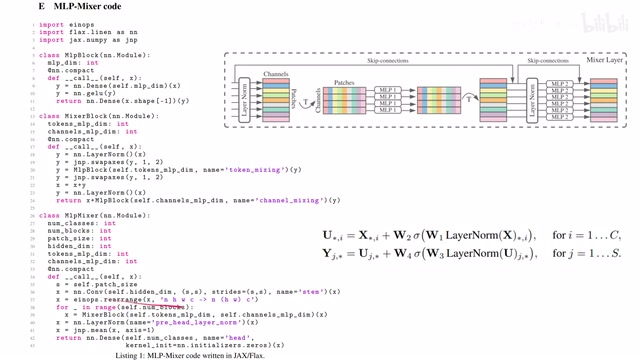
00:07:47–00:08:18 · 画面 025变成了这个 evi 的 representation 这样呢我们有 n 个 sample 每个 sample 里面呢有 h 乘 w 个 patch2 个 patch 呢它对应的 channel 数量呢就是 c 这个 hidden dimension 它的数量然后呢你就可以搭连续的几层这个 mixer block 就是不断的重复这个过程那么最后呢再过一层 layer normalization 做一个这个 mean 我们可以看到是沿着这个第一个轴做的那它呢就是所有 patch 所在的这个轴嘛我们把它做 mean 呢就是一个 average pooling
00:08:18–00:08:21 · 画面 026
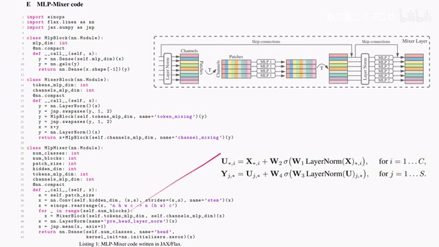
00:08:18–00:08:21 · 画面 02600:08:21–00:09:24 · 画面 027
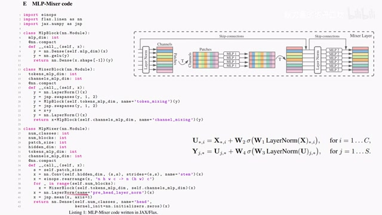
00:08:21–00:09:24 · 画面 027最后做一个 MLP，给它放到 mix，最后把这个 feature 过一个 MLP，直接做分类就可以了。它的代数表达式就是这个样子进来，我们来这一层，第一层 fully connected layer，激活函数，第二层 fully connected layer、skip connection 对吧，每一层然后下面一层也是一样的。到这里，这篇论文的模型的主要框架我们已经理了很多遍了。总的来说，本文提供了一种性能和 vision transformer 比肩的这样一套框架。
重点是这个速度比 Vision Transformer 要快而性能不会下降的太差很多设计也比 Vision Transformer 简单但是现阶段作者汇报实验还是比较有限我们想看到很多的 ablation 包括为什么选择 GELU 这样一个技术函数都需要更多的实验去咨词那么以上就是我对这篇论文的简单的分析感谢您的收看再见
00:09:24–00:09:24 · 画面 028
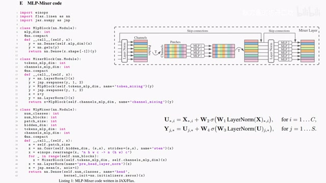
00:09:24–00:09:24 · 画面 028转写与来源说明 · 0 个自动复核提示
保留 20 个原始语音片段，0 个片段触发自动复核提示。提示仅用于定位可能的术语、重复或识别问题，不等于已确认错误。
讲解画面为源视频截图（640×360），不是可编辑 PPT 文件。全片按每秒 2 帧扫描内容变化，逐步展开页保留；连续动画保留代表画面。清晰度受源视频限制。
原视频：paper/合集_2026-10-16_新模型/[论文简析]MLP-Mixer An all-MLP Architecture for Vision[2105.01601].mp4
SHA-256：c827c08cb54ebb471be956e7b5270b73bb6350f8797340ec3110d8d8540b17c1
全文按视频语音与画面制作。原论文可从上方链接下载；完整资料包保留全文、原始逐字稿、字幕和校对记录。